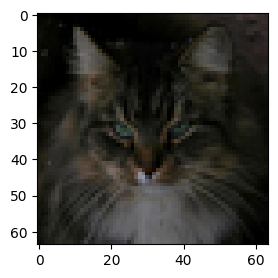

%load_ext autoreload
%autoreload 2Compare VLMs
The VLM dashboard has a list of VLMs and their performance scores.
We want to pick a small-ish (under 8B) model that is sufficient to generate captions for animal face images in the AFHQ dataset.
Install Dependencies
!pip install peft==0.13.2 flash_attn==2.7.* qwen_vl_utils==0.0.8 transformers==4.47.* autoawq==0.2.* jinja2==3.1.4 xformers==0.0.28 bitsandbytes==0.45.0
Defaulting to user installation because normal site-packages is not writeable
WARNING: Ignoring invalid distribution ~vidia-cusparse-cu12 (/home/ubuntu/.local/lib/python3.11/site-packages)
WARNING: Ignoring invalid distribution ~vidia-cusparse-cu12 (/home/ubuntu/.local/lib/python3.11/site-packages)
Requirement already satisfied: peft==0.13.2 in /home/ubuntu/.local/lib/python3.11/site-packages (0.13.2)
Requirement already satisfied: flash_attn==2.7.* in /home/ubuntu/.local/lib/python3.11/site-packages (2.7.0.post2)
Requirement already satisfied: qwen_vl_utils==0.0.8 in /home/ubuntu/.local/lib/python3.11/site-packages (0.0.8)
Requirement already satisfied: transformers==4.47.* in /home/ubuntu/.local/lib/python3.11/site-packages (4.47.0)
Requirement already satisfied: autoawq==0.2.* in /home/ubuntu/.local/lib/python3.11/site-packages (0.2.7.post2)
Requirement already satisfied: jinja2==3.1.4 in /home/ubuntu/.local/lib/python3.11/site-packages (3.1.4)
Collecting xformers==0.0.28
Downloading xformers-0.0.28-cp311-cp311-manylinux_2_28_x86_64.whl.metadata (1.0 kB)
Requirement already satisfied: bitsandbytes==0.45.0 in /home/ubuntu/.local/lib/python3.11/site-packages (0.45.0)
Requirement already satisfied: numpy>=1.17 in /home/ubuntu/.local/lib/python3.11/site-packages (from peft==0.13.2) (1.26.4)
Requirement already satisfied: packaging>=20.0 in /opt/miniconda/lib/python3.11/site-packages (from peft==0.13.2) (23.1)
Requirement already satisfied: psutil in /home/ubuntu/.local/lib/python3.11/site-packages (from peft==0.13.2) (5.9.8)
Requirement already satisfied: pyyaml in /home/ubuntu/.local/lib/python3.11/site-packages (from peft==0.13.2) (6.0.1)
Requirement already satisfied: torch>=1.13.0 in /home/ubuntu/.local/lib/python3.11/site-packages (from peft==0.13.2) (2.5.1)
Requirement already satisfied: tqdm in /home/ubuntu/.local/lib/python3.11/site-packages (from peft==0.13.2) (4.66.5)
Requirement already satisfied: accelerate>=0.21.0 in /home/ubuntu/.local/lib/python3.11/site-packages (from peft==0.13.2) (0.33.0)
Requirement already satisfied: safetensors in /home/ubuntu/.local/lib/python3.11/site-packages (from peft==0.13.2) (0.4.2)
Requirement already satisfied: huggingface-hub>=0.17.0 in /home/ubuntu/.local/lib/python3.11/site-packages (from peft==0.13.2) (0.24.5)
Requirement already satisfied: einops in /home/ubuntu/.local/lib/python3.11/site-packages (from flash_attn==2.7.*) (0.7.0)
Requirement already satisfied: av in /home/ubuntu/.local/lib/python3.11/site-packages (from qwen_vl_utils==0.0.8) (14.0.0)
Requirement already satisfied: pillow in /home/ubuntu/.local/lib/python3.11/site-packages (from qwen_vl_utils==0.0.8) (10.2.0)
Requirement already satisfied: requests in /home/ubuntu/.local/lib/python3.11/site-packages (from qwen_vl_utils==0.0.8) (2.32.3)
Requirement already satisfied: filelock in /home/ubuntu/.local/lib/python3.11/site-packages (from transformers==4.47.*) (3.13.3)
Requirement already satisfied: regex!=2019.12.17 in /home/ubuntu/.local/lib/python3.11/site-packages (from transformers==4.47.*) (2023.12.25)
Requirement already satisfied: tokenizers<0.22,>=0.21 in /home/ubuntu/.local/lib/python3.11/site-packages (from transformers==4.47.*) (0.21.0)
Requirement already satisfied: triton in /home/ubuntu/.local/lib/python3.11/site-packages (from autoawq==0.2.*) (3.1.0)
Requirement already satisfied: typing-extensions>=4.8.0 in /home/ubuntu/.local/lib/python3.11/site-packages (from autoawq==0.2.*) (4.10.0)
Requirement already satisfied: datasets>=2.20 in /home/ubuntu/.local/lib/python3.11/site-packages (from autoawq==0.2.*) (2.21.0)
Requirement already satisfied: zstandard in /opt/miniconda/lib/python3.11/site-packages (from autoawq==0.2.*) (0.19.0)
Requirement already satisfied: MarkupSafe>=2.0 in /home/ubuntu/.local/lib/python3.11/site-packages (from jinja2==3.1.4) (2.1.5)
Collecting torch>=1.13.0 (from peft==0.13.2)
Using cached torch-2.4.1-cp311-cp311-manylinux1_x86_64.whl.metadata (26 kB)
Requirement already satisfied: sympy in /home/ubuntu/.local/lib/python3.11/site-packages (from torch>=1.13.0->peft==0.13.2) (1.13.1)
Requirement already satisfied: networkx in /home/ubuntu/.local/lib/python3.11/site-packages (from torch>=1.13.0->peft==0.13.2) (3.2.1)
Requirement already satisfied: fsspec in /home/ubuntu/.local/lib/python3.11/site-packages (from torch>=1.13.0->peft==0.13.2) (2024.3.1)
Collecting nvidia-cuda-nvrtc-cu12==12.1.105 (from torch>=1.13.0->peft==0.13.2)
Using cached nvidia_cuda_nvrtc_cu12-12.1.105-py3-none-manylinux1_x86_64.whl.metadata (1.5 kB)
Collecting nvidia-cuda-runtime-cu12==12.1.105 (from torch>=1.13.0->peft==0.13.2)
Using cached nvidia_cuda_runtime_cu12-12.1.105-py3-none-manylinux1_x86_64.whl.metadata (1.5 kB)
Collecting nvidia-cuda-cupti-cu12==12.1.105 (from torch>=1.13.0->peft==0.13.2)
Using cached nvidia_cuda_cupti_cu12-12.1.105-py3-none-manylinux1_x86_64.whl.metadata (1.6 kB)
Requirement already satisfied: nvidia-cudnn-cu12==9.1.0.70 in /home/ubuntu/.local/lib/python3.11/site-packages (from torch>=1.13.0->peft==0.13.2) (9.1.0.70)
Collecting nvidia-cublas-cu12==12.1.3.1 (from torch>=1.13.0->peft==0.13.2)
Using cached nvidia_cublas_cu12-12.1.3.1-py3-none-manylinux1_x86_64.whl.metadata (1.5 kB)
Collecting nvidia-cufft-cu12==11.0.2.54 (from torch>=1.13.0->peft==0.13.2)
Using cached nvidia_cufft_cu12-11.0.2.54-py3-none-manylinux1_x86_64.whl.metadata (1.5 kB)
Collecting nvidia-curand-cu12==10.3.2.106 (from torch>=1.13.0->peft==0.13.2)
Using cached nvidia_curand_cu12-10.3.2.106-py3-none-manylinux1_x86_64.whl.metadata (1.5 kB)
Collecting nvidia-cusolver-cu12==11.4.5.107 (from torch>=1.13.0->peft==0.13.2)
Using cached nvidia_cusolver_cu12-11.4.5.107-py3-none-manylinux1_x86_64.whl.metadata (1.6 kB)
Collecting nvidia-cusparse-cu12==12.1.0.106 (from torch>=1.13.0->peft==0.13.2)
Using cached nvidia_cusparse_cu12-12.1.0.106-py3-none-manylinux1_x86_64.whl.metadata (1.6 kB)
Collecting nvidia-nccl-cu12==2.20.5 (from torch>=1.13.0->peft==0.13.2)
Using cached nvidia_nccl_cu12-2.20.5-py3-none-manylinux2014_x86_64.whl.metadata (1.8 kB)
Collecting nvidia-nvtx-cu12==12.1.105 (from torch>=1.13.0->peft==0.13.2)
Using cached nvidia_nvtx_cu12-12.1.105-py3-none-manylinux1_x86_64.whl.metadata (1.7 kB)
Collecting triton (from autoawq==0.2.*)
Using cached triton-3.0.0-1-cp311-cp311-manylinux2014_x86_64.manylinux_2_17_x86_64.whl.metadata (1.3 kB)
Requirement already satisfied: nvidia-nvjitlink-cu12 in /home/ubuntu/.local/lib/python3.11/site-packages (from nvidia-cusolver-cu12==11.4.5.107->torch>=1.13.0->peft==0.13.2) (12.4.127)
Requirement already satisfied: pyarrow>=15.0.0 in /home/ubuntu/.local/lib/python3.11/site-packages (from datasets>=2.20->autoawq==0.2.*) (17.0.0)
Requirement already satisfied: dill<0.3.9,>=0.3.0 in /home/ubuntu/.local/lib/python3.11/site-packages (from datasets>=2.20->autoawq==0.2.*) (0.3.8)
Requirement already satisfied: pandas in /home/ubuntu/.local/lib/python3.11/site-packages (from datasets>=2.20->autoawq==0.2.*) (2.2.2)
Requirement already satisfied: xxhash in /home/ubuntu/.local/lib/python3.11/site-packages (from datasets>=2.20->autoawq==0.2.*) (3.5.0)
Requirement already satisfied: multiprocess in /home/ubuntu/.local/lib/python3.11/site-packages (from datasets>=2.20->autoawq==0.2.*) (0.70.16)
Requirement already satisfied: aiohttp in /home/ubuntu/.local/lib/python3.11/site-packages (from datasets>=2.20->autoawq==0.2.*) (3.10.5)
Requirement already satisfied: charset-normalizer<4,>=2 in /opt/miniconda/lib/python3.11/site-packages (from requests->qwen_vl_utils==0.0.8) (2.0.4)
Requirement already satisfied: idna<4,>=2.5 in /opt/miniconda/lib/python3.11/site-packages (from requests->qwen_vl_utils==0.0.8) (3.4)
Requirement already satisfied: urllib3<3,>=1.21.1 in /opt/miniconda/lib/python3.11/site-packages (from requests->qwen_vl_utils==0.0.8) (1.26.18)
Requirement already satisfied: certifi>=2017.4.17 in /opt/miniconda/lib/python3.11/site-packages (from requests->qwen_vl_utils==0.0.8) (2023.7.22)
Requirement already satisfied: aiohappyeyeballs>=2.3.0 in /home/ubuntu/.local/lib/python3.11/site-packages (from aiohttp->datasets>=2.20->autoawq==0.2.*) (2.4.0)
Requirement already satisfied: aiosignal>=1.1.2 in /home/ubuntu/.local/lib/python3.11/site-packages (from aiohttp->datasets>=2.20->autoawq==0.2.*) (1.3.1)
Requirement already satisfied: attrs>=17.3.0 in /home/ubuntu/.local/lib/python3.11/site-packages (from aiohttp->datasets>=2.20->autoawq==0.2.*) (23.2.0)
Requirement already satisfied: frozenlist>=1.1.1 in /home/ubuntu/.local/lib/python3.11/site-packages (from aiohttp->datasets>=2.20->autoawq==0.2.*) (1.4.1)
Requirement already satisfied: multidict<7.0,>=4.5 in /home/ubuntu/.local/lib/python3.11/site-packages (from aiohttp->datasets>=2.20->autoawq==0.2.*) (6.0.5)
Requirement already satisfied: yarl<2.0,>=1.0 in /home/ubuntu/.local/lib/python3.11/site-packages (from aiohttp->datasets>=2.20->autoawq==0.2.*) (1.9.4)
Requirement already satisfied: python-dateutil>=2.8.2 in /home/ubuntu/.local/lib/python3.11/site-packages (from pandas->datasets>=2.20->autoawq==0.2.*) (2.9.0.post0)
Requirement already satisfied: pytz>=2020.1 in /home/ubuntu/.local/lib/python3.11/site-packages (from pandas->datasets>=2.20->autoawq==0.2.*) (2024.1)
Requirement already satisfied: tzdata>=2022.7 in /home/ubuntu/.local/lib/python3.11/site-packages (from pandas->datasets>=2.20->autoawq==0.2.*) (2024.1)
Requirement already satisfied: mpmath<1.4,>=1.1.0 in /home/ubuntu/.local/lib/python3.11/site-packages (from sympy->torch>=1.13.0->peft==0.13.2) (1.3.0)
Requirement already satisfied: six>=1.5 in /home/ubuntu/.local/lib/python3.11/site-packages (from python-dateutil>=2.8.2->pandas->datasets>=2.20->autoawq==0.2.*) (1.16.0)
Downloading xformers-0.0.28-cp311-cp311-manylinux_2_28_x86_64.whl (16.7 MB)
━━━━━━━━━━━━━━━━━━━━━━━━━━━━━━━━━━━━━━━━ 16.7/16.7 MB 14.8 MB/s eta 0:00:00a 0:00:01
Using cached torch-2.4.1-cp311-cp311-manylinux1_x86_64.whl (797.1 MB)
Using cached triton-3.0.0-1-cp311-cp311-manylinux2014_x86_64.manylinux_2_17_x86_64.whl (209.4 MB)
Using cached nvidia_cublas_cu12-12.1.3.1-py3-none-manylinux1_x86_64.whl (410.6 MB)
Using cached nvidia_cuda_cupti_cu12-12.1.105-py3-none-manylinux1_x86_64.whl (14.1 MB)
Using cached nvidia_cuda_nvrtc_cu12-12.1.105-py3-none-manylinux1_x86_64.whl (23.7 MB)
Using cached nvidia_cuda_runtime_cu12-12.1.105-py3-none-manylinux1_x86_64.whl (823 kB)
Using cached nvidia_cufft_cu12-11.0.2.54-py3-none-manylinux1_x86_64.whl (121.6 MB)
Using cached nvidia_curand_cu12-10.3.2.106-py3-none-manylinux1_x86_64.whl (56.5 MB)
Using cached nvidia_cusolver_cu12-11.4.5.107-py3-none-manylinux1_x86_64.whl (124.2 MB)
Using cached nvidia_cusparse_cu12-12.1.0.106-py3-none-manylinux1_x86_64.whl (196.0 MB)
Using cached nvidia_nccl_cu12-2.20.5-py3-none-manylinux2014_x86_64.whl (176.2 MB)
Using cached nvidia_nvtx_cu12-12.1.105-py3-none-manylinux1_x86_64.whl (99 kB)
WARNING: Ignoring invalid distribution ~vidia-cusparse-cu12 (/home/ubuntu/.local/lib/python3.11/site-packages)
Installing collected packages: triton, nvidia-nvtx-cu12, nvidia-nccl-cu12, nvidia-cusparse-cu12, nvidia-curand-cu12, nvidia-cufft-cu12, nvidia-cuda-runtime-cu12, nvidia-cuda-nvrtc-cu12, nvidia-cuda-cupti-cu12, nvidia-cublas-cu12, nvidia-cusolver-cu12, torch, xformers
Attempting uninstall: triton
WARNING: Ignoring invalid distribution ~vidia-cusparse-cu12 (/home/ubuntu/.local/lib/python3.11/site-packages)
Found existing installation: triton 3.1.0
Uninstalling triton-3.1.0:
Successfully uninstalled triton-3.1.0
Attempting uninstall: nvidia-nvtx-cu12
WARNING: Ignoring invalid distribution ~vidia-cusparse-cu12 (/home/ubuntu/.local/lib/python3.11/site-packages)
Found existing installation: nvidia-nvtx-cu12 12.4.127
Uninstalling nvidia-nvtx-cu12-12.4.127:
Successfully uninstalled nvidia-nvtx-cu12-12.4.127
Attempting uninstall: nvidia-nccl-cu12
WARNING: Ignoring invalid distribution ~vidia-cusparse-cu12 (/home/ubuntu/.local/lib/python3.11/site-packages)
Found existing installation: nvidia-nccl-cu12 2.21.5
Uninstalling nvidia-nccl-cu12-2.21.5:
Successfully uninstalled nvidia-nccl-cu12-2.21.5
Attempting uninstall: nvidia-cusparse-cu12
WARNING: Ignoring invalid distribution ~vidia-cusparse-cu12 (/home/ubuntu/.local/lib/python3.11/site-packages)
Found existing installation: nvidia-cusparse-cu12 12.3.1.170
Uninstalling nvidia-cusparse-cu12-12.3.1.170:
Successfully uninstalled nvidia-cusparse-cu12-12.3.1.170
Attempting uninstall: nvidia-curand-cu12
WARNING: Ignoring invalid distribution ~vidia-cusparse-cu12 (/home/ubuntu/.local/lib/python3.11/site-packages)
Found existing installation: nvidia-curand-cu12 10.3.5.147
Uninstalling nvidia-curand-cu12-10.3.5.147:
Successfully uninstalled nvidia-curand-cu12-10.3.5.147
Attempting uninstall: nvidia-cufft-cu12
WARNING: Ignoring invalid distribution ~vidia-cusparse-cu12 (/home/ubuntu/.local/lib/python3.11/site-packages)
Found existing installation: nvidia-cufft-cu12 11.2.1.3
Uninstalling nvidia-cufft-cu12-11.2.1.3:
Successfully uninstalled nvidia-cufft-cu12-11.2.1.3
Attempting uninstall: nvidia-cuda-runtime-cu12
WARNING: Ignoring invalid distribution ~vidia-cusparse-cu12 (/home/ubuntu/.local/lib/python3.11/site-packages)
Found existing installation: nvidia-cuda-runtime-cu12 12.4.127
Uninstalling nvidia-cuda-runtime-cu12-12.4.127:
Successfully uninstalled nvidia-cuda-runtime-cu12-12.4.127
Attempting uninstall: nvidia-cuda-nvrtc-cu12
WARNING: Ignoring invalid distribution ~vidia-cusparse-cu12 (/home/ubuntu/.local/lib/python3.11/site-packages)
Found existing installation: nvidia-cuda-nvrtc-cu12 12.4.127
Uninstalling nvidia-cuda-nvrtc-cu12-12.4.127:
Successfully uninstalled nvidia-cuda-nvrtc-cu12-12.4.127
Attempting uninstall: nvidia-cuda-cupti-cu12
WARNING: Ignoring invalid distribution ~vidia-cusparse-cu12 (/home/ubuntu/.local/lib/python3.11/site-packages)
Found existing installation: nvidia-cuda-cupti-cu12 12.4.127
Uninstalling nvidia-cuda-cupti-cu12-12.4.127:
Successfully uninstalled nvidia-cuda-cupti-cu12-12.4.127
Attempting uninstall: nvidia-cublas-cu12
WARNING: Ignoring invalid distribution ~vidia-cusparse-cu12 (/home/ubuntu/.local/lib/python3.11/site-packages)
Found existing installation: nvidia-cublas-cu12 12.4.5.8
Uninstalling nvidia-cublas-cu12-12.4.5.8:
Successfully uninstalled nvidia-cublas-cu12-12.4.5.8
Attempting uninstall: nvidia-cusolver-cu12
WARNING: Ignoring invalid distribution ~vidia-cusparse-cu12 (/home/ubuntu/.local/lib/python3.11/site-packages)
Found existing installation: nvidia-cusolver-cu12 11.6.1.9
Uninstalling nvidia-cusolver-cu12-11.6.1.9:
Successfully uninstalled nvidia-cusolver-cu12-11.6.1.9
Attempting uninstall: torch
WARNING: Ignoring invalid distribution ~vidia-cusparse-cu12 (/home/ubuntu/.local/lib/python3.11/site-packages)
Found existing installation: torch 2.5.1
Uninstalling torch-2.5.1:
Successfully uninstalled torch-2.5.1
Attempting uninstall: xformers
WARNING: Ignoring invalid distribution ~vidia-cusparse-cu12 (/home/ubuntu/.local/lib/python3.11/site-packages)
Found existing installation: xformers 0.0.28.post3
Uninstalling xformers-0.0.28.post3:
Successfully uninstalled xformers-0.0.28.post3
WARNING: Ignoring invalid distribution ~vidia-cusparse-cu12 (/home/ubuntu/.local/lib/python3.11/site-packages)
ERROR: pip's dependency resolver does not currently take into account all the packages that are installed. This behaviour is the source of the following dependency conflicts.
torchvision 0.20.1 requires torch==2.5.1, but you have torch 2.4.1 which is incompatible.
Successfully installed nvidia-cublas-cu12-12.1.3.1 nvidia-cuda-cupti-cu12-12.1.105 nvidia-cuda-nvrtc-cu12-12.1.105 nvidia-cuda-runtime-cu12-12.1.105 nvidia-cufft-cu12-11.0.2.54 nvidia-curand-cu12-10.3.2.106 nvidia-cusolver-cu12-11.4.5.107 nvidia-cusparse-cu12-12.1.0.106 nvidia-nccl-cu12-2.20.5 nvidia-nvtx-cu12-12.1.105 torch-2.4.1 triton-3.0.0 xformers-0.0.28
WARNING: Ignoring invalid distribution ~vidia-cusparse-cu12 (/home/ubuntu/.local/lib/python3.11/site-packages)
WARNING: Ignoring invalid distribution ~vidia-cusparse-cu12 (/home/ubuntu/.local/lib/python3.11/site-packages)import transformers
import jinja2
import bitsandbytes
print(transformers.__version__)
print(jinja2.__version__)
print(bitsandbytes.__version__)
jinja2.parser4.47.0
3.1.4
0.45.0<module 'jinja2.parser' from '/home/ubuntu/.local/lib/python3.11/site-packages/jinja2/parser.py'>Load Images
from torch.utils.data import Dataset
from datasets import load_dataset
from torchvision import transforms
import torch
from transformers import AutoModel, AutoTokenizer
dataset_name = "zzsi/afhq64_16k"
class HuggingFaceDataset(Dataset):
def __init__(self, dataset_path: str, transform=None):
self.dataset = load_dataset(dataset_path, split="train")
self.transform = transform
self.image_key = self.find_image_key()
def find_image_key(self) -> str:
# Check if the dataset has the "image" key
# NOTE: Can exapnd this to other common keys if needed
if "image" in self.dataset[0].keys():
return "image"
raise KeyError("Dataset does not have an 'image' key")
def __len__(self):
return len(self.dataset)
def __getitem__(self, idx):
image = self.dataset[idx][self.image_key]
image = image.convert("RGB") # Convert to RGB to ensure 3 channels
# By default, set label to 0 to conform to current expected batch format
label = 0
if self.transform:
image = self.transform(image)
return image, label
transforms_list = [
transforms.ToTensor(),
# transforms.Normalize((0.5, 0.5, 0.5), (0.5, 0.5, 0.5)),
]
transform = transforms.Compose(transforms_list)
full_dataset = HuggingFaceDataset(dataset_name, transform=transform)
print(f"dataset has {len(full_dataset)} images")
print(f"first image shape: {full_dataset[0][0].shape}")dataset has 14630 images
first image shape: torch.Size([3, 64, 64])from matplotlib import pyplot as plt
plt.figure(figsize=(3, 3))
first_image = full_dataset[0][0].permute(1, 2, 0).numpy()
plt.imshow(first_image)
plt.show()
# normalize the image to [0, 1]
import numpy as np
from PIL import Image
first_image = (first_image - first_image.min()) / max(first_image.max() - first_image.min(), 1e-6)
pil_image = Image.fromarray((first_image * 255).astype(np.uint8))
pil_image.save("first_image.jpg")QWEN-VL
from transformers import Qwen2VLForConditionalGeneration, AutoTokenizer, AutoProcessor
from qwen_vl_utils import process_vision_info
# default: Load the model on the available device(s)
model = Qwen2VLForConditionalGeneration.from_pretrained(
"Qwen/Qwen2-VL-2B-Instruct-AWQ", torch_dtype="auto", device_map="auto"
)
# We recommend enabling flash_attention_2 for better acceleration and memory saving, especially in multi-image and video scenarios.
# model = Qwen2VLForConditionalGeneration.from_pretrained(
# "Qwen/Qwen2-VL-2B-Instruct-AWQ",
# torch_dtype=torch.bfloat16,
# attn_implementation="flash_attention_2",
# device_map="auto",
# )
# default processer
processor = AutoProcessor.from_pretrained("Qwen/Qwen2-VL-2B-Instruct-AWQ")
# The default range for the number of visual tokens per image in the model is 4-16384. You can set min_pixels and max_pixels according to your needs, such as a token count range of 256-1280, to balance speed and memory usage.
# min_pixels = 256*28*28
# max_pixels = 1280*28*28
# processor = AutoProcessor.from_pretrained("Qwen/Qwen2-VL-2B-Instruct-AWQ", min_pixels=min_pixels, max_pixels=max_pixels)
2024-12-06 14:56:55.329856: I tensorflow/core/util/port.cc:153] oneDNN custom operations are on. You may see slightly different numerical results due to floating-point round-off errors from different computation orders. To turn them off, set the environment variable `TF_ENABLE_ONEDNN_OPTS=0`.
2024-12-06 14:56:55.342432: E external/local_xla/xla/stream_executor/cuda/cuda_fft.cc:485] Unable to register cuFFT factory: Attempting to register factory for plugin cuFFT when one has already been registered
2024-12-06 14:56:55.357560: E external/local_xla/xla/stream_executor/cuda/cuda_dnn.cc:8454] Unable to register cuDNN factory: Attempting to register factory for plugin cuDNN when one has already been registered
2024-12-06 14:56:55.362094: E external/local_xla/xla/stream_executor/cuda/cuda_blas.cc:1452] Unable to register cuBLAS factory: Attempting to register factory for plugin cuBLAS when one has already been registered
2024-12-06 14:56:55.373408: I tensorflow/core/platform/cpu_feature_guard.cc:210] This TensorFlow binary is optimized to use available CPU instructions in performance-critical operations.
To enable the following instructions: AVX2 AVX512F AVX512_VNNI FMA, in other operations, rebuild TensorFlow with the appropriate compiler flags.
2024-12-06 14:56:56.085600: W tensorflow/compiler/tf2tensorrt/utils/py_utils.cc:38] TF-TRT Warning: Could not find TensorRT
We suggest you to set `torch_dtype=torch.float16` for better efficiency with AWQ.
`Qwen2VLRotaryEmbedding` can now be fully parameterized by passing the model config through the `config` argument. All other arguments will be removed in v4.46# base64 encoded image using jpeg
import base64
import io
from PIL import Image
import numpy as np
# first write the image to a bytes object
image_bytes = io.BytesIO()
pil_image.save(image_bytes, format="JPEG")
image_bytes = image_bytes.getvalue()
prefix = "data:image/jpeg;base64,"
image_base64 = prefix + base64.b64encode(image_bytes).decode('utf-8')
messages = [
{
"role": "user",
"content": [
{
"type": "image",
"image": image_base64,
# "image": "https://qianwen-res.oss-cn-beijing.aliyuncs.com/Qwen-VL/assets/demo.jpeg",
},
{"type": "text", "text": "Describe this image."},
],
}
]
# Preprocess the inputs
# Preparation for inference
text = processor.apply_chat_template(
messages, tokenize=False, add_generation_prompt=True
)
image_inputs, video_inputs = process_vision_info(messages)
inputs = processor(
text=[text],
images=image_inputs,
videos=video_inputs,
padding=True,
return_tensors="pt",
)
inputs = inputs.to("cuda")
# Inference: Generation of the output
generated_ids = model.generate(**inputs, max_new_tokens=128)
generated_ids_trimmed = [
out_ids[len(in_ids) :] for in_ids, out_ids in zip(inputs.input_ids, generated_ids)
]
output_text = processor.batch_decode(
generated_ids_trimmed, skip_special_tokens=True, clean_up_tokenization_spaces=False
)
print(output_text)["The image depicts a cat with a long, flowing coat that appears to be a Maine Coon breed. The cat has a fluffy, dense fur that is predominantly white with some darker markings, particularly around the eyes and around the neck. The cat's eyes are large and expressive, and it has a long, curved tail that is slightly curled. The cat's ears are pointed and have a distinct, fluffy texture. The overall appearance of the cat suggests it is well-groomed and healthy."]CogVLM
from transformers import AutoModelForCausalLM, AutoTokenizer
MODEL_PATH = "THUDM/cogvlm2-llama3-chat-19B-int4"
DEVICE = 'cuda' if torch.cuda.is_available() else 'cpu'
TORCH_TYPE = torch.bfloat16 if torch.cuda.is_available() and torch.cuda.get_device_capability()[
0] >= 8 else torch.float16
tokenizer = AutoTokenizer.from_pretrained(
MODEL_PATH,
trust_remote_code=True
)
model = AutoModelForCausalLM.from_pretrained(
MODEL_PATH,
torch_dtype=TORCH_TYPE,
trust_remote_code=True,
low_cpu_mem_usage=True,
).eval()
text_only_template = "A chat between a curious user and an artificial intelligence assistant. The assistant gives helpful, detailed, and polite answers to the user's questions. USER: {} ASSISTANT:"
query = "Describe this image."
history = []
input_by_model = model.build_conversation_input_ids(
tokenizer,
query=query,
history=history,
images=[pil_image],
template_version='chat'
)
inputs = {
'input_ids': input_by_model['input_ids'].unsqueeze(0).to(DEVICE),
'token_type_ids': input_by_model['token_type_ids'].unsqueeze(0).to(DEVICE),
'attention_mask': input_by_model['attention_mask'].unsqueeze(0).to(DEVICE),
'images': [[input_by_model['images'][0].to(DEVICE).to(TORCH_TYPE)]] if pil_image is not None else None,
}
gen_kwargs = {
"max_new_tokens": 128,
"pad_token_id": 128002,
}
with torch.no_grad():
outputs = model.generate(**inputs, **gen_kwargs)
outputs = outputs[:, inputs['input_ids'].shape[1]:]
response = tokenizer.decode(outputs[0])
response = response.split("<|end_of_text|>")[0]
print("\nCogVLM2:", response)Unused kwargs: ['_load_in_4bit', '_load_in_8bit', 'quant_method']. These kwargs are not used in <class 'transformers.utils.quantization_config.BitsAndBytesConfig'>.--------------------------------------------------------------------------- TypeError Traceback (most recent call last) Cell In[9], line 44 38 gen_kwargs = { 39 "max_new_tokens": 128, 40 "pad_token_id": 128002, 41 } 43 with torch.no_grad(): ---> 44 outputs = model.generate(**inputs, **gen_kwargs) 45 outputs = outputs[:, inputs['input_ids'].shape[1]:] 46 response = tokenizer.decode(outputs[0]) File ~/.local/lib/python3.11/site-packages/torch/utils/_contextlib.py:116, in context_decorator.<locals>.decorate_context(*args, **kwargs) 113 @functools.wraps(func) 114 def decorate_context(*args, **kwargs): 115 with ctx_factory(): --> 116 return func(*args, **kwargs) File ~/.local/lib/python3.11/site-packages/transformers/generation/utils.py:2252, in GenerationMixin.generate(self, inputs, generation_config, logits_processor, stopping_criteria, prefix_allowed_tokens_fn, synced_gpus, assistant_model, streamer, negative_prompt_ids, negative_prompt_attention_mask, **kwargs) 2244 input_ids, model_kwargs = self._expand_inputs_for_generation( 2245 input_ids=input_ids, 2246 expand_size=generation_config.num_return_sequences, 2247 is_encoder_decoder=self.config.is_encoder_decoder, 2248 **model_kwargs, 2249 ) 2251 # 12. run sample (it degenerates to greedy search when `generation_config.do_sample=False`) -> 2252 result = self._sample( 2253 input_ids, 2254 logits_processor=prepared_logits_processor, 2255 stopping_criteria=prepared_stopping_criteria, 2256 generation_config=generation_config, 2257 synced_gpus=synced_gpus, 2258 streamer=streamer, 2259 **model_kwargs, 2260 ) 2262 elif generation_mode in (GenerationMode.BEAM_SAMPLE, GenerationMode.BEAM_SEARCH): 2263 # 11. prepare beam search scorer 2264 beam_scorer = BeamSearchScorer( 2265 batch_size=batch_size, 2266 num_beams=generation_config.num_beams, (...) 2271 max_length=generation_config.max_length, 2272 ) File ~/.local/lib/python3.11/site-packages/transformers/generation/utils.py:3257, in GenerationMixin._sample(self, input_ids, logits_processor, stopping_criteria, generation_config, synced_gpus, streamer, **model_kwargs) 3254 outputs = model_forward(**model_inputs, return_dict=True) 3256 # synced_gpus: don't waste resources running the code we don't need; kwargs must be updated before skipping -> 3257 model_kwargs = self._update_model_kwargs_for_generation( 3258 outputs, 3259 model_kwargs, 3260 is_encoder_decoder=self.config.is_encoder_decoder, 3261 ) 3262 if synced_gpus and this_peer_finished: 3263 continue File ~/.cache/huggingface/modules/transformers_modules/THUDM/cogvlm2-llama3-chat-19B-int4/119df232ab9fca4a1be87f95c239d7b9a765032e/modeling_cogvlm.py:710, in CogVLMForCausalLM._update_model_kwargs_for_generation(self, outputs, model_kwargs, is_encoder_decoder, standardize_cache_format) 702 def _update_model_kwargs_for_generation( 703 self, 704 outputs: "ModelOutput", (...) 708 ) -> Dict[str, Any]: 709 # update past_key_values --> 710 model_kwargs["past_key_values"] = self._extract_past_from_model_output( 711 outputs, standardize_cache_format=standardize_cache_format 712 ) 713 if getattr(outputs, "state", None) is not None: 714 model_kwargs["state"] = outputs.state TypeError: GenerationMixin._extract_past_from_model_output() got an unexpected keyword argument 'standardize_cache_format'
Try Blip-2
Try MiniCPM-V-2
model_name = 'openbmb/MiniCPM-V-2'
model = AutoModel.from_pretrained(model_name, trust_remote_code=True,
attn_implementation='sdpa', torch_dtype=torch.bfloat16) # sdpa or flash_attention_2, no eager
# For Nvidia GPUs support BF16 (like A100, H100, RTX3090)
model = model.to(device='cuda', dtype=torch.bfloat16)
# For Nvidia GPUs do NOT support BF16 (like V100, T4, RTX2080)
#model = model.to(device='cuda', dtype=torch.float16)
# For Mac with MPS (Apple silicon or AMD GPUs).
# Run with `PYTORCH_ENABLE_MPS_FALLBACK=1 python test.py`
#model = model.to(device='mps', dtype=torch.float16)
tokenizer = AutoTokenizer.from_pretrained(model_name, trust_remote_code=True)
_ = model.eval()import numpy as np
from PIL import Image
print(first_image.shape, first_image.max() * 255)
pil_image = Image.fromarray((first_image * 255).astype(np.uint8))
question = 'What is in the image?'
msgs = [{'role': 'user', 'content': question}]
res, context, _ = model.chat(
image=pil_image,
msgs=msgs,
tokenizer=tokenizer,
context=None,
# sampling=True,
# temperature=0.7
)
print(res)(64, 64, 3) 166.00000530481339--------------------------------------------------------------------------- AttributeError Traceback (most recent call last) Cell In[19], line 11 8 question = 'What is in the image?' 9 msgs = [{'role': 'user', 'content': question}] ---> 11 res, context, _ = model.chat( 12 image=pil_image, 13 msgs=msgs, 14 tokenizer=tokenizer, 15 context=None, 16 # sampling=True, 17 # temperature=0.7 18 ) 19 print(res) File ~/.local/lib/python3.11/site-packages/torch/nn/modules/module.py:1729, in Module.__getattr__(self, name) 1727 if name in modules: 1728 return modules[name] -> 1729 raise AttributeError(f"'{type(self).__name__}' object has no attribute '{name}'") AttributeError: 'Qwen2VLForConditionalGeneration' object has no attribute 'chat'